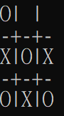

原始終端機畫面

原始 C 語言版本的棋盤畫面。

原始 C 語言版本的棋盤畫面。
除了傳統的三連線玩法，特殊模式採用每人最多三顆棋子：放下第四顆時，最早的棋子會消失。
棋子大小 55%／75%／100% 區分放置順序，最早棋子使用 50% 不透明度。
特殊模式最多 60 次有效落子，最後一回合仍然優先判斷勝利。
在開發 OOXX 遊戲的過程中，我遇到最大的困難是遊戲邏輯的判定。
很多時候，我以為程式的規則已經考慮得很完整，但實際測試後，卻還是會發現一些沒有注意到的漏洞。有時候修正了一個問題，又會發現其他情況沒有處理好，因此花了不少時間反覆檢查與修改。
這次的開發經驗讓我發現，寫出一個能執行的程式並不代表功能已經完善，還需要不斷測試不同情況，才能讓遊戲規則更加完整。
雖然修改的過程花了很長時間，但也讓我更加了解程式邏輯與測試的重要性。
可展開閱讀與複製，不提供下載按鈕。此處使用原始檔 game.c 的內容。
正在載入原始碼…